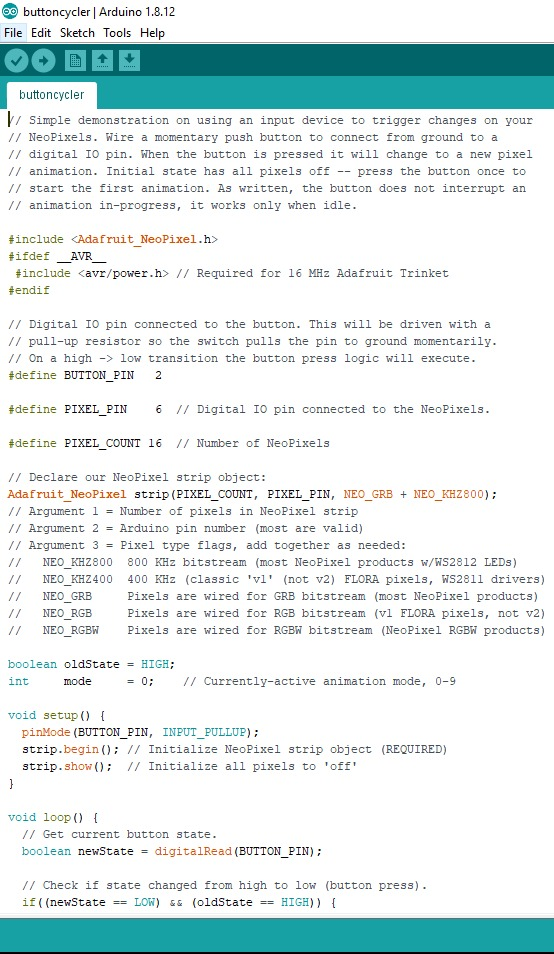
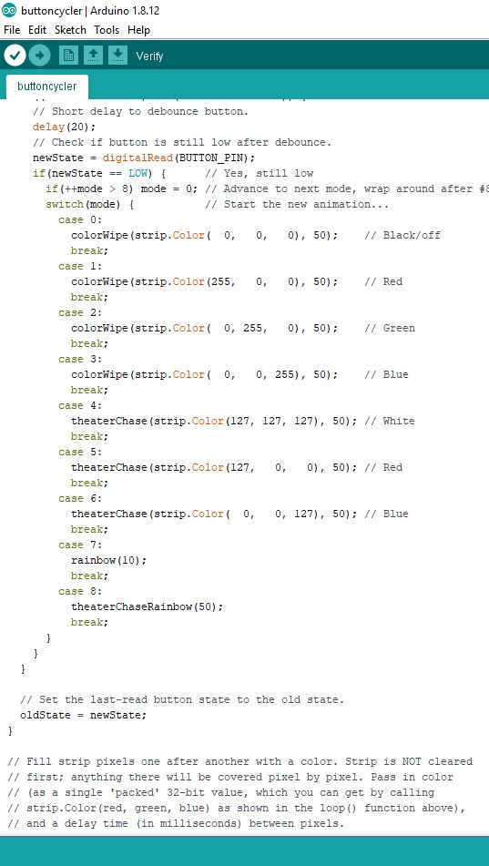
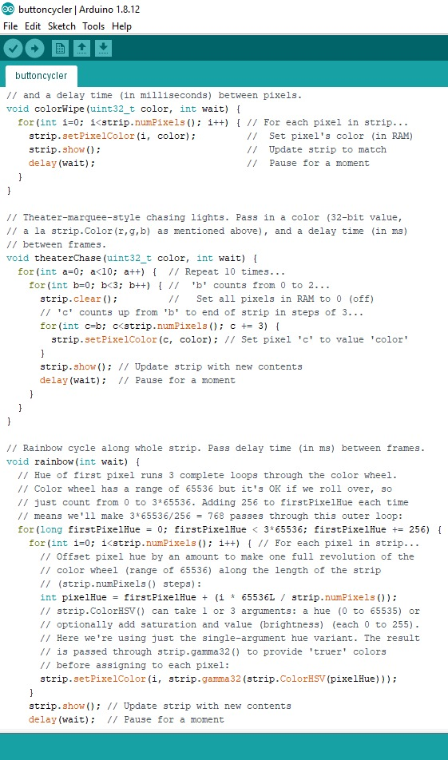
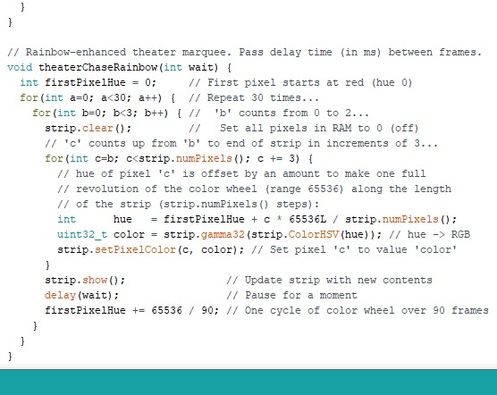
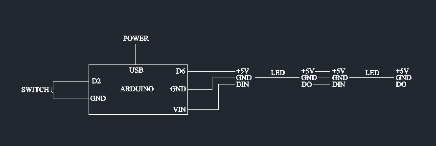
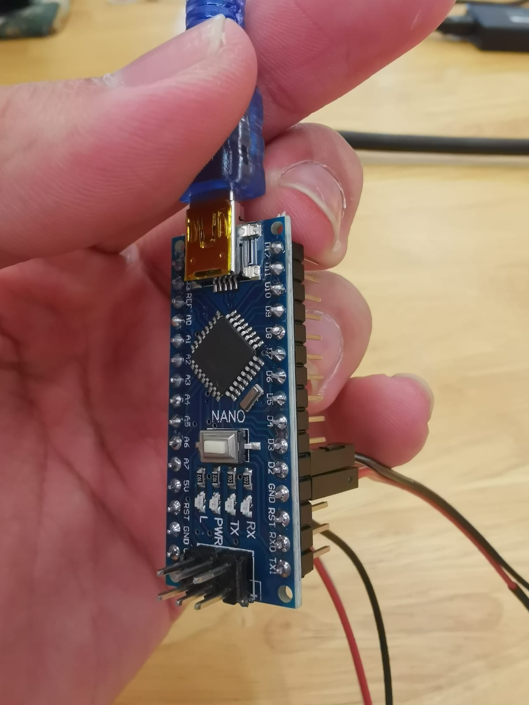
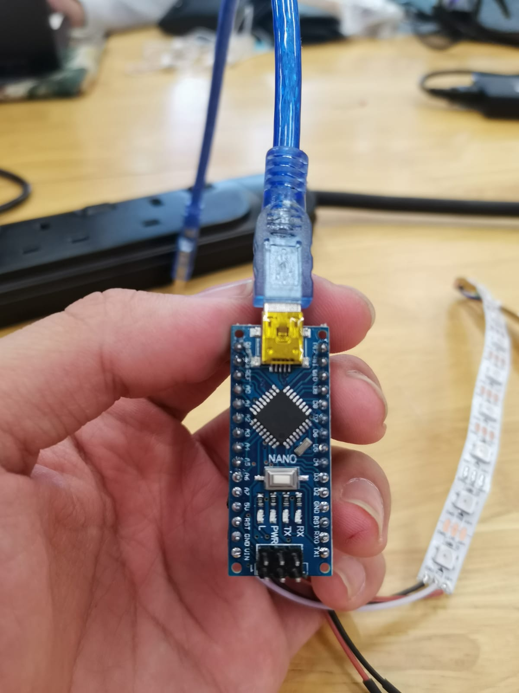

Arduino C++ Programming
Tinker CAD & Arduino Software
Arduino is an open-source hardware and software company, project and user community
that designs and manufactures single-board microcontrollers and microcontroller kits for
building digital devices.
Tinker CAD also offers circuit testing & building. thus we had used Tinker CAD to
create and test out our circuits.
The first assignment was to figure out the coding sequence for traffic light.
So in this circuit, the red is always on. when the push button is pressed, it delays the
red light to turn off and the green light to turn on for a time limit. After the green light's
time limit is up, the green light will switch off and the red light will turn on making a
continuous cycle as it was set to loop forever.
This is the code for the traffic light sequence.

This is the C++ we used for our project fablab light display.



This is a simple circuit diagram we had came out with for out fablab light display
After inputing the program into the arduino, we then solder the led strips and try out the
lighting.



Checking that everything is working fine, we then try to fit the whole electronics into the
base of out fablab light display.